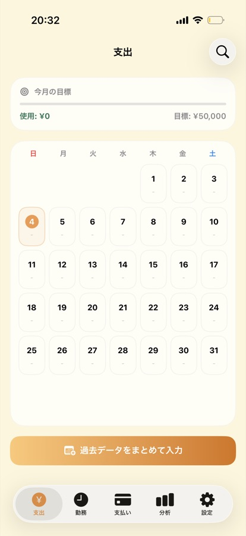
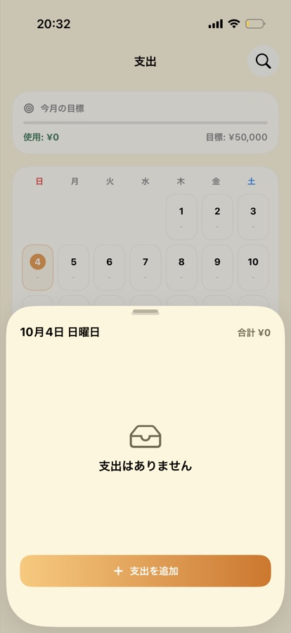
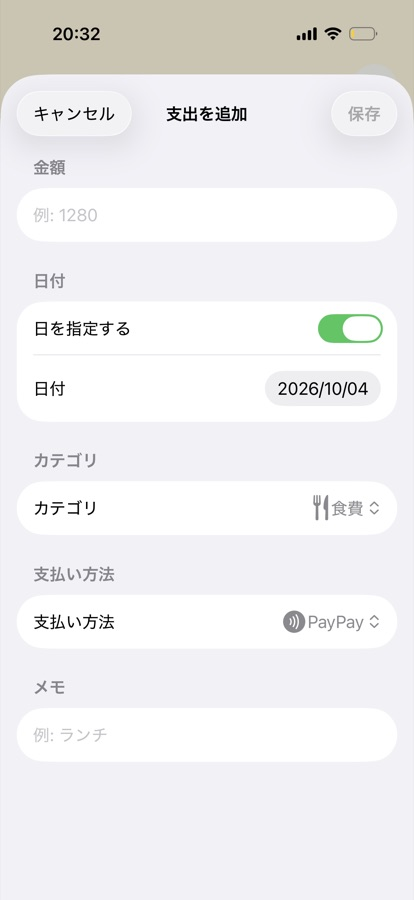
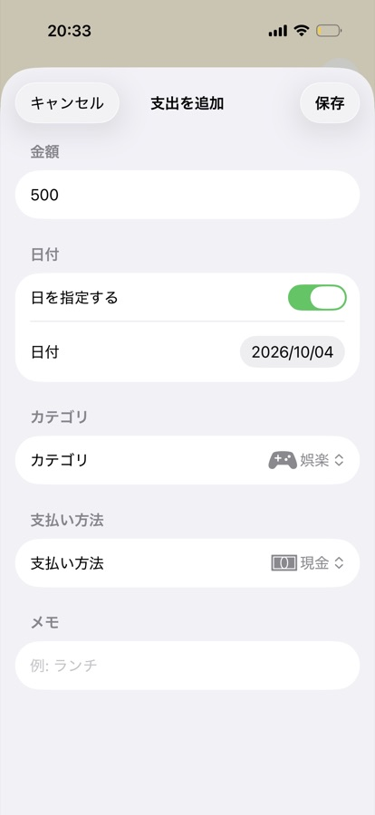
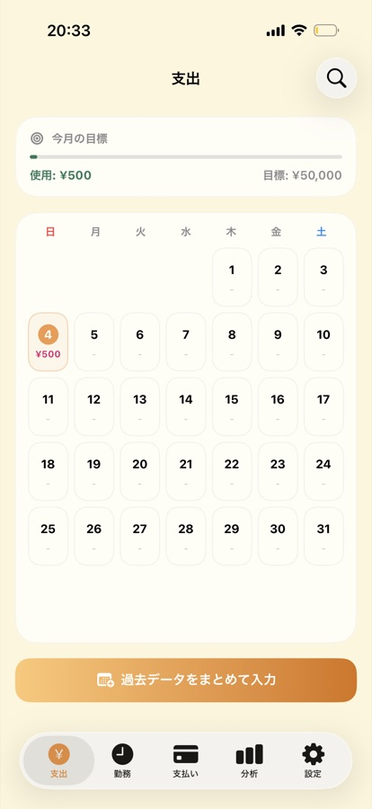
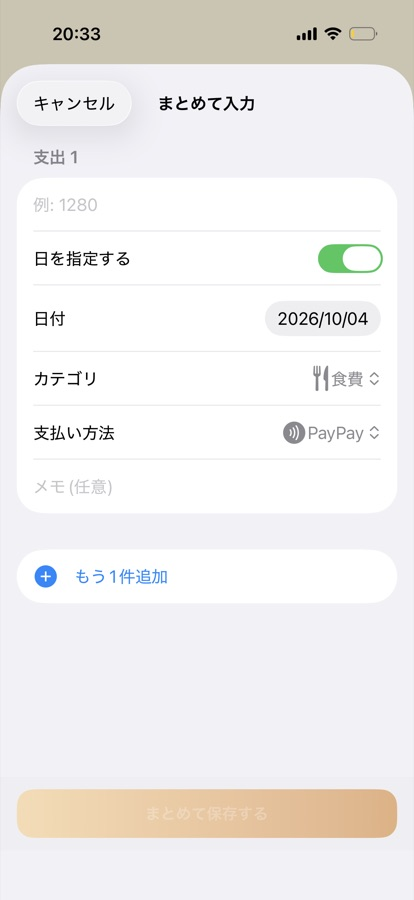
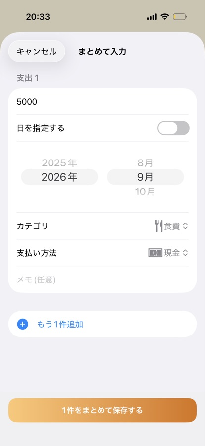
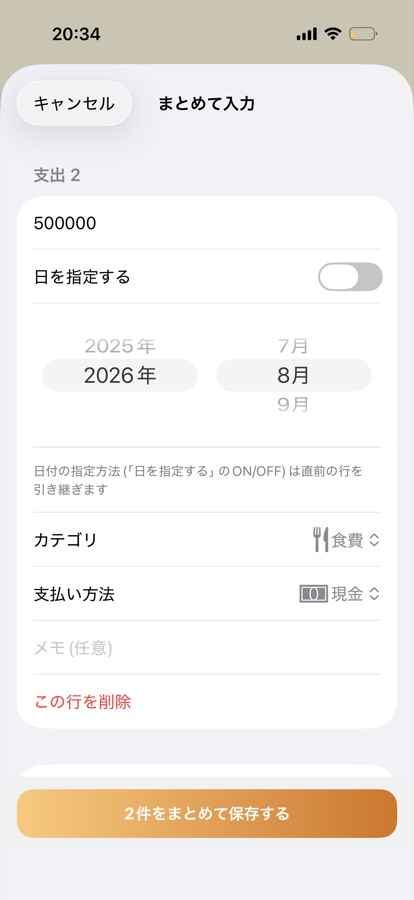
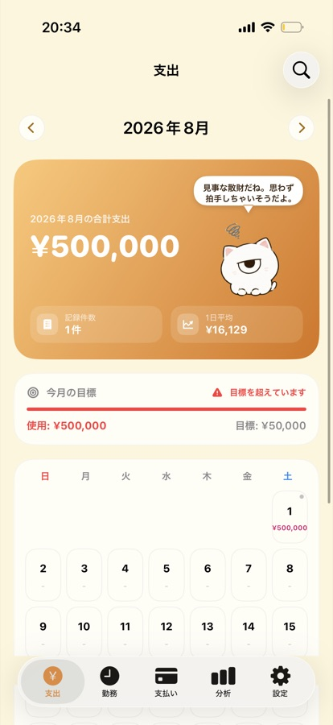

画面の写真









操作の動画
支出を見る
- カレンダーの各日付に、その日の合計金額が表示されます。
- 上部で月を切り替えると、前の月・次の月の支出を見られます。
- 日付をタップすると、その日の明細が開きます。
支出を追加・編集・削除する
- 明細画面で、支出の追加・編集・削除ができます。
- 金額は、9桁までの数字で入力します。
検索
画面右上の検索アイコンから、カテゴリ名やメモの文字で過去の支出を探せます。